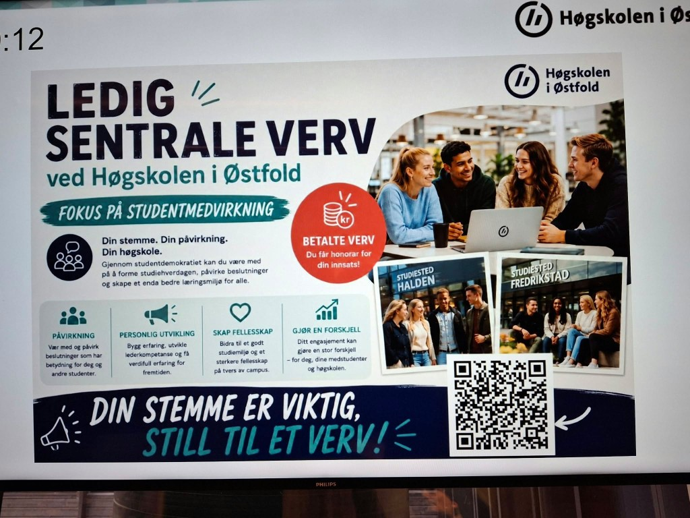

På få år har kunstig intelligens gått fra å være et fremtidsfenomen til å bli et vanlig arbeidsverktøy i markedsføringsbransjen. Verktøy som ChatGPT, Midjourney og Adobe Firefly gjør det mulig å produsere tekst, bilder og kampanjemateriell på minutter, noe som tidligere kunne kreve både designere, fotografer og betydelig mer tid.
Ved Høgskolen i Østfold har AI allerede blitt en del av arbeidsprosessene i kommunikasjonsarbeidet. Likevel har institusjonen satt klare grenser for hvordan teknologien skal brukes.
Vi ønsker å fremstå autentiske. Derfor bruker vi ikke AI-genererte bilder eller videoer som kan forveksles med ekte fotografier eller video.
Dersom høgskolen bruker AI-genererte illustrasjoner, skal de merkes tydelig.
– KI-generert innhold må alltid merkes. Det handler om å være åpen overfor mottakerne og sikre tillit til kommunikasjonen vår, sier hun.
I praksis betyr det at høgskolen er bevisst på hvordan bilder og kampanjestoff fremstår – og at synlig KI-bruk ikke skal undergrave tilliten til budskapet.

Effektiviserer arbeidet
For mange virksomheter handler AI først og fremst om effektivisering. Teknologien kan redusere kostnader, forkorte produksjonstiden og gjøre det enklere å produsere innhold til digitale kanaler.
Kirsten Gløckner Gunnerud forteller at AI allerede brukes i kommunikasjonsarbeidet ved høgskolen.
– AI kan forenkle prosesser og være tidsbesparende. Det kan bidra til å hente ut viktig innhold i store dokumenter og fungere som en kreativ medhjelper i utviklingen av idéer, sier hun.
Også Eva Pettersen, grafisk designer, daglig leder i BYRO og ekstern foreleser i digital markedsføring ved Høgskolen i Østfold, mener teknologien gir store muligheter.
– Det kan effektivisere produksjonen, redusere kostnader og gi flere kreative muligheter. Samtidig handler AI i markedsføring om langt mer enn bare å generere bilder. Teknologien kan også brukes til analyser, tekstproduksjon, idéutvikling og systemer som effektiviserer arbeidsprosesser, sier hun.
Frykter tap av troverdighet
Selv om AI kan gjøre markedsføringsarbeidet raskere og billigere, mener Pettersen at teknologien også innebærer risiko.
Dersom man helt åpenbart ser at en bedrift bruker AI-genererte bilder, spesielt hvis kvaliteten er dårlig, tror jeg det kan svekke troverdigheten.
– Det kan gi et inntrykk av at bedriften velger en enkel og billig løsning fremfor å lage godt innhold, sier hun.
Når bildene oppleves som generiske – med feil detaljer, kunstig lys eller ansikter som ikke helt stemmer – kan det ifølge Pettersen svekke både reklamen og avsenderen bak.
Hun tror mange forbrukere reagerer negativt dersom reklame fremstår som kunstig eller lite gjennomarbeidet.
– Mange oppdager slike bilder ganske raskt. Da kan det gi et negativt inntrykk av både reklamen og bedriften bak, forklarer hun.
Pettersen mener derfor at bedrifter må være bevisste på hvordan teknologien brukes.
– Det er også en risiko for at bedrifter mister sitt eget visuelle særpreg dersom de blir for avhengige av AI-generert innhold, sier hun.